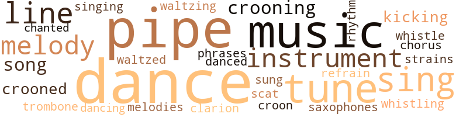
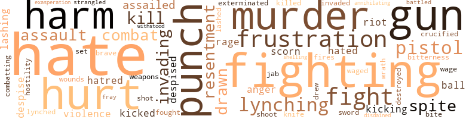
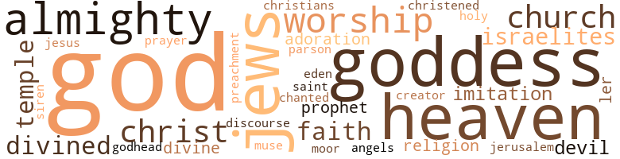

Black Challenge (The), by Austin, Edmund O. (1958)
82 music-related terms matched in this text.
Most frequent terms in this topic: dance (13); pipe (11); music (8); tune (5); melody (3)
chorus.n.01
Definition: any utterance produced simultaneously by a group
| word | sentence |
|---|---|
| chorus | But Jocko did not propose to have his neck or any - other portion of his body broken ; and as the birds began j to voice their evening melodies , and the crickets and the 4 frogs , the locusts and katydids , sent up their chorus of evening song to the gods of the woods , it seemed to Jere-miah that , above them all , he could detect the chatter of \ Jocko blending itself with those other woodland sounds . |
clarion.n.01
Definition: a medieval brass instrument with a clear shrill tone
| word | sentence |
|---|---|
| clarion | It was on the editorial page , though , that the Movement sounded its clarion call . |
croon.v.01
Definition: sing softly
| word | sentence |
|---|---|
| croon | When I sings , I ' se goin ' to sing strong and hollow like a big trombone ; when I cries , I ' se goin ' to croon like de woods asighing at night . |
| crooning | No crooning black voice had ever lulled him to sleep . |
| crooning | A little thatched hut . . . a crooning river . . . heavy laden forest . . . rustling leaves ... a dreamy sundown . . . peace and quiet . |
| crooned | He crooned : " Jock , cumma here , cumma to ole Pedro , " at the same time plunging into the trees . |
| crooned | " A Lincoln ! " crooned Murphy , spreading his eyes and lips up towards the jury as if making an interesting discovery . |
| crooning | One of the band , with a soft , crooning voice , broke into song , and the group of dancers on the floor , lost in ecstasy , cuddled together . |
dance.n.01
Definition: an artistic form of nonverbal communication
| word | sentence |
|---|---|
| dance | Pretty soon after they stops singing ' , a dance starts up . |
| dance | Den comes one of dese black boys with a white woman on de dance door . |
| dance | De idea of lettin ' a Nigger man dance wid a white woman . |
| dance | De dance jes ' goes on . " |
| dance | " Well , the dance always has to go on , does n't it , Marcus ? " |
| dances | The trouble with you is that you 're so crazy about what you think is a nice time , dances and parties and such things , that you are not particular - so long as a man can spend a little money in showing you those times ; but I - well , those things do n't mean a fig to me . " |
| dance | To the right of their table , beyond the rows of other tables with diners which lay between , was a small dance enclosure . |
| dance | Come on , little girlie , let 's dance . " |
| dance | In that dance she had laid her head restfully against Jeremiah 's shoulders , and it had been very soothing . |
| dance | In the ceiling , over the dance space , a revolving bowl-shaped chandelier , jewel-cut and faceted with prisms of glass reflecting all the colors of the rainbow , shed its kaleidoscopic light on the struggling dancers below . |
| dance | The dance was over . |
| dance | Another dance had struck up . |
dance.v.03
Definition: skip, leap, or move up and down or sideways
| word | sentence |
|---|---|
| dance | " Come on and dance with me . " |
| danced | He had not danced much of late ; besides , he was not sure that his West Indian style would do justice to this young Harlem flower . |
| dance | Still , Lido Jones evidently wanted to dance , and so did he . |
| Dancing | " Dancing with me . " |
kick.v.04
Definition: kick a leg up
| word | sentence |
|---|---|
| kicking | Nevertheless , as time went by and his inward vision of the prattling , kicking youngster with sparkling black eyes became fainter and fainter , Michael 's early release from life seemed in some vague , dim way a matter of relief to his father . |
| kicking | A desire for emulation seized him , and he jumped into the ring towards the kicking performer . |
music.n.01
Definition: an artistic form of auditory communication incorporating instrumental or vocal tones in a structured and continuous manner
| word | sentence |
|---|---|
| music | Fully a dozen couples were swaying and " bumping " in harmony to the music . |
| music | Had a Negro spiritual burst forth at that moment , that black man , unlearned in the art of music , would instinctively have carried its tuneful plaint , for in it was made articulate the cry of his starving soul . |
| music | They glided onto the floor as the music struck tip . |
| music | There was a lull in the music , and the waiter was bringing their dinner . |
| music | Strains of music from the orchestra playing at Tallyho Inn came to them as to the other lake adventurers , faintly wistful , it seemed , from the distance . |
| music | The music came to an abrupt end . |
| music | He found his feet moving in time to Lido 's and in rhythm to the music . |
| music | The music came to an abrupt stop . |
musical_instrument.n.01
Definition: any of various devices or contrivances that can be used to produce musical tones or sounds
| word | sentence |
|---|---|
| instrument | Soon the instrument blared out its closing notes . |
| instruments | The musicians , five Negroes , were at that moment ascending the platform and tuning up their instruments . |
| instruments | Drums beating , brass instruments blaring , banners lifted on high , purple-uniformed and gold-braided , the parade of the Universal Negro Movement of the World started early that Saturday morning from Lenox Avenue and wound its way westward up the hill through 145th Street and on to Riverside Drive . |
phrase.n.02
Definition: a short musical passage
| word | sentence |
|---|---|
| phrases | But words eluded him and , finally , in a last moment of frustration at being unable to find the language with which to close his love-declaration , he had determined to appropriate the words and phrases of some famous author - at the moment he had forgotten whether it was Carlisle , Huxley , Spencer or another writer of note of a past generation - to the object of his adoration on a similar occasion , and he had brazenly copied that language . |
pipe.n.04
Definition: a tubular wind instrument
| word | sentence |
|---|---|
| pipe | " No , " replied Marcus slowly , sucking a long black pipe in his mouth , " I do n't sympathize with any Germans ; but as ' tween them and the English , I sure was rooting for the Germans . " |
| pipe | The bowl of his pipe was clutched in one hand , and he was waving it first one way and then another , puncturing the air with its stem . |
| pipe | His black pipe in his mouth , his legs lazily spanning the balustrade , Marcus smoked and awaited Jeremiah 's arrival . |
| pipe | The one was sucking at his old black pipe and the other was puffing at a long cigar . |
| pipe | " I doan know ' bout dat eder , " quietly rejoined Marcus , sucking vigorously at his black pipe . |
| pipe | A short silence , and Marcus knocked the ashes from his pipe . |
| pipe | Marcus Cox had taken a pipe from a nearby stand and was slowly filling it with tobacco . |
| pipe | Stalking over to a smoking stand in a corner of the large room , he snuffed the match with which he had been lighting his pipe and carefully laid it down . |
| pipe | Jeremiah pulled at his cigar , and rings of white smoke began to curl from the bowl of Marcus ' pipe . |
| pipe | Marcus held his pipe poised in one hand , and his gaze roamed out through an open window as if to some distant vista beyond . |
| pipe | His right fist clenched , his left clutching his long black pipe , he gestured wildly . |
refrain.n.01
Definition: the part of a song where a soloist is joined by a group of singers
| word | sentence |
|---|---|
| refrain | The refrain blended with Jeremiah 's airy mood and , unconsciously , he hummed it . |
rhythm.n.04
Definition: the arrangement of spoken words alternating stressed and unstressed elements
| word | sentence |
|---|---|
| rhythm | He found his feet moving in time to Lido 's and in rhythm to the music . |
sax.n.02
Definition: a single-reed woodwind with a conical bore
| word | sentence |
|---|---|
| saxophones | No words - just a tune and its haunting melody throated by the saxophones as they reached the crescendo of the com - poser 's heartache . |
scat.n.01
Definition: singing jazz; the singer substitutes nonsense syllables for the words of the song and tries to sound like a musical instrument
| word | sentence |
|---|---|
| scat | That gliding couple here , for instance , almost brushing him as Jeremiah rose from his scat to lean over the edge of the brass rail , the girl 's arms encircling her partner 's neck and her head resting upon his shoulder , his arms about her slim waist as if to draw the last measure of entrancement from her swaying body to his - contentment , satisfaction , nay , a sweet , gentle sadness suffusing her face as she nestled more closely to him - surely , no greater bliss , no diviner solace could ever again be snatched from Life 's cup by these two creatures than in this fleeting moment ! |
sing.v.02
Definition: produce tones with the voice
| word | sentence |
|---|---|
| sings | When I sings , I ' se goin ' to sing strong and hollow like a big trombone ; when I cries , I ' se goin ' to croon like de woods asighing at night . |
| sing | When I sings , I ' se goin ' to sing strong and hollow like a big trombone ; when I cries , I ' se goin ' to croon like de woods asighing at night . |
| sung | No poet has adequately sung its praises nor expressed his love ! |
| sing | Under centuries of English oppression they , too , had continued to smile and sing and dream . |
| sing | Jes ' like one time I was in a cab ' ret in Paris , and dere was two black boys in dere , and manl you should a-hear those babies sing . |
singing.n.01
Definition: the act of singing vocal music
| word | sentence |
|---|---|
| singing | Pretty soon after they stops singing ' , a dance starts up . |
song.n.01
Definition: a short musical composition with words
| word | sentence |
|---|---|
| song | But Jocko did not propose to have his neck or any - other portion of his body broken ; and as the birds began j to voice their evening melodies , and the crickets and the 4 frogs , the locusts and katydids , sent up their chorus of evening song to the gods of the woods , it seemed to Jere-miah that , above them all , he could detect the chatter of \ Jocko blending itself with those other woodland sounds . |
| song | He 's ' Me and My Shadow , ' as de song says , " ended Marcus . |
| song | One of the band , with a soft , crooning voice , broke into song , and the group of dancers on the floor , lost in ecstasy , cuddled together . |
tone.v.01
Definition: utter monotonously and repetitively and rhythmically
| word | sentence |
|---|---|
| chanted | Then , as one who performs a solemn ritual , he chanted : " I , Marcus Cox , High Commander of the Universal Negro Movement of the United States and of de World , hereby appoints you , Jeremiah King , Gran ' Counselor of de said ' sociation , so help me God ! " |
trombone.n.01
Definition: a brass instrument consisting of a long tube whose length can be varied by a U-shaped slide
| word | sentence |
|---|---|
| trombone | When I sings , I ' se goin ' to sing strong and hollow like a big trombone ; when I cries , I ' se goin ' to croon like de woods asighing at night . |
tune.n.01
Definition: a succession of notes forming a distinctive sequence
| word | sentence |
|---|---|
| line | Then , suddenly , tired of the whole discussion , he added hastily : " We get nowhere with this line of talk , Marcus ; we 're simply wasting time . |
| tune | Jeremiah passed down a short hall and entered a fairsized room in which a phonograph was pouring forth a breezy , jazzy tune . |
| tunes | No painter has yet encompassed its sprawling spirit within the narrow confines of his palette and brush , for like many another place in the world , its tunes , its tones , its moods are so diverse , so varying , so changing and changeful that nothing else in , about , or around it is typical save its glowing sands and the perpetual swish and wash and roar of the breakers as they roll unceasingly to the shore . |
| tune | No words - just a tune and its haunting melody throated by the saxophones as they reached the crescendo of the com - poser 's heartache . |
| melody | No words - just a tune and its haunting melody throated by the saxophones as they reached the crescendo of the com - poser 's heartache . |
| strains | On the other hand , Hugh Fitz-Johns , Maurice 's father , would have none of Amanda Boissere , this dark-skinned girl , with Negro , Indian , and other strains of outlandish blood flowing in her veins . |
| melody | Or was it merely that particular melody being played which was plaintive and wistful - " Somewhere in the World There 's One Who Cares for Me " - that old tune Jeremiah and she had waltzed to in the dancing pavilion of Young 's Million Dollar Pier ? |
| tune | Or was it merely that particular melody being played which was plaintive and wistful - " Somewhere in the World There 's One Who Cares for Me " - that old tune Jeremiah and she had waltzed to in the dancing pavilion of Young 's Million Dollar Pier ? |
| melodies | But Jocko did not propose to have his neck or any - other portion of his body broken ; and as the birds began j to voice their evening melodies , and the crickets and the 4 frogs , the locusts and katydids , sent up their chorus of evening song to the gods of the woods , it seemed to Jere-miah that , above them all , he could detect the chatter of \ Jocko blending itself with those other woodland sounds . |
| lines | " Yes , " ruled Judge Guffy , " I think he may examine you along those lines . " |
| tune | In the center was a railed-in space where couples were dancing ; at the far end on a raised platform , an orchestra blared forth a lilting tune ; all around were small and large tables at which a few stray couples sat huddled together . |
| melody | He had heard that particular melody again and again at night spots during the past weeks - " Although you belong to somebody else , tonight you belong to me . " |
| tune | A peppy , spirited tune was lunging forth from the band . |
| line | Jeremiah , following the long line of single-file marchers , attempted to enter , but an undersized , bulletheaded Negro barred the way . |
waltz.v.01
Definition: dance a waltz
| word | sentence |
|---|---|
| waltzing | He and Lido had entered the dancing pavilion , and they were waltzing . |
| waltzed | Or was it merely that particular melody being played which was plaintive and wistful - " Somewhere in the World There 's One Who Cares for Me " - that old tune Jeremiah and she had waltzed to in the dancing pavilion of Young 's Million Dollar Pier ? |
whistle.v.01
Definition: make whistling sounds
| word | sentence |
|---|---|
| whistle | Dey 's all like a flock of dose birds in de air , and you got to stan ' bellin ' a bush an ' whistle to dem soft-like . |
| whistling | Another fusillade and whistling things through the trees in front of him told Jeremiah that real , honest-to-goodness bullets were being hurled in his direction . |
146 violence-related terms matched in this text.
Most frequent terms in this topic: fighting (7); hates (6); hurt (6); hate (6); gun (6)
affray.n.02
Definition: a noisy fight
| word | sentence |
|---|---|
| fray | He again shuffled his typewritten pages and returned to the fray : " Leh me ax you one t ' ing , George Coates : Is yo ' livin ' wid yo ' wife ? |
aggravation.n.01
Definition: an exasperated feeling of annoyance
| word | sentence |
|---|---|
| exasperation | Murphy had goaded and jeered Marcus to the limit of exasperation . |
anger.n.01
Definition: a strong emotion; a feeling that is oriented toward some real or supposed grievance
| word | sentence |
|---|---|
| anger | Lido felt It , but she sensed also that it was not mere anger . |
| anger | Restless impatience gave place to petulant anger . |
attack.v.01
Definition: launch an attack or assault on; begin hostilities or start warfare with
| word | sentence |
|---|---|
| assailed | They had assailed her ears . |
| assailed | This slim , curling creature in his arms , wrapped in a faint aroma of the same perfume that had assailed his nostrils earlier that night in Marcus Cox 's car , was very pleasant . |
| assailed | A passing wonder assailed him as to whether he could ever fit himself into these people 's affairs . |
battle.v.01
Definition: battle or contend against in or as if in a battle
| word | sentence |
|---|---|
| combat | That 's their policy in a nutshell ; and , unfortunately , there has never been any sufficiently well-organized religion to combat that . |
| combat | " And , my friends , I think it behooves every one of us here tonight as good colored American citizens to combat this movement , to rebuke it . |
| combatting | Such donations as may be made here tonight will be applied to the purpose of widely and publicly combatting the Universal Negro Movement of the United States and the World . " |
| battled | Outside , in the lobby of the courtroom , Jeremiah argued and battled with Marcus . |
blast.v.03
Definition: use explosives on
| word | sentence |
|---|---|
| shelling | You sees dem shelling out dere bucks ? |
contemn.v.01
Definition: look down on with disdain
| word | sentence |
|---|---|
| despise | Thus , he had come to despise that soul , to condemn it , to resent being hemmed in by and with it . |
| scorn | Passing Madame Castanet and her attendant ladies-in-waiting with the tiniest perceptible gesture of scorn , he pulled up beside Jeremiah . |
| despise | Amanda Jones never ceased to love and to despise Maurice Fitz-Johns . |
| despised | Equally , he despised whatever there was in her which encouraged these attentions . |
| scorn | There was deep scorn in Jeremiah 's tones . |
| despised | Many another in his position , graduated from the necessity for such labor , might have despised it and escaped from it ; but Marcus ' soul was big enough to divine that this physical labor was a dignified thing so long as his spirit was free , so long as he was not urged to the doing of it by whips and jibes and by . . . necessity . |
| disdained | Jeremiah had no use for conventional prayer and disdained to be caught in such an act of weakness . |
crucify.v.01
Definition: kill by nailing onto a cross
| word | sentence |
|---|---|
| crucified | Jesus , the son of a Galilean , had tried it ; but even this superman had been crucified - and by his own people , too . |
defy.v.01
Definition: resist or confront with resistance
| word | sentence |
|---|---|
| withstood | I withstood the shock . |
destroy.v.04
Definition: put (an animal) to death
| word | sentence |
|---|---|
| destroyed | Draft after draft he had attempted and destroyed . |
draw.v.23
Definition: pull (a person) apart with four horses tied to his extremities, so as to execute him
| word | sentence |
|---|---|
| drew | The taxi in which he was riding drew up with a jolt , and Jeremiah pulled himself from his revery and got out . |
| drawn | As he slammed the door and went down the steps , Marcus saw his Lincoln limousine still drawn up alongside the curb . |
| drawn | Marcus Cox had slipped off his shoes , drawn up another chair in front of him , and now was resting his stockinged feet across the second chair . |
| drawn | The entire phalanx of Negro paraders was drawn up in columns along the length of the pier facing the ship ; and , as the High Commander and Captain Hippolyte met at the head of the gangway and clicked heels and exchanged salutes , there was an outburst of cheering . |
eliminate.v.03
Definition: kill in large numbers
| word | sentence |
|---|---|
| annihilating | There were times when , supremely touched in the fibres of his being , the impulse came on him to bend his knees to the earth in holy adoration , not as one who worships in stone and wooden temples erected to a conventional and impossible God , but as one prostrates himself in the anguish of a moment too annihilating for tears . |
engage.v.07
Definition: carry on (wars, battles, or campaigns)
| word | sentence |
|---|---|
| waged | And why should he not be proud , now that the battle gauge of " race " had been thrown down for him in a world where contests were waged by different weapons , to wage his own battle not as an indeterminate hybrid but as a Negro ? |
| wage | And why should he not be proud , now that the battle gauge of " race " had been thrown down for him in a world where contests were waged by different weapons , to wage his own battle not as an indeterminate hybrid but as a Negro ? |
exterminate.v.01
Definition: kill en masse; kill on a large scale; kill many
| word | sentence |
|---|---|
| exterminated | Clearly , it was a quality which the Indian race did not have , because that race had almost been exterminated . |
fight.n.02
Definition: the act of fighting; any contest or struggle
| word | sentence |
|---|---|
| combat | In the half-dim light which lay like an enveloping shadow over them , had there been a watcher on the shore , they would have appeared , for the moment , like two carved figures in a posture of threatened combat . ' |
fight.v.02
Definition: fight against or resist strongly
| word | sentence |
|---|---|
| fighting | Marcus , is n't that a fighting word ? |
| fight | I ' se goin ' to beg for her ; I ' se goin ' to steal for her ; I ' se goin ' to fight for her , and if dere is any killin ' to be did , I ' se goin ' to kill for her . |
| fight | Extreme culture made a man too proud to fight ; but with ninety-nine per cent of the world not so highly refined , it was hell not to have the fighting spirit when the battle gauge was thrown down . |
| fighting | Extreme culture made a man too proud to fight ; but with ninety-nine per cent of the world not so highly refined , it was hell not to have the fighting spirit when the battle gauge was thrown down . |
| fight | If they are entitled to things within the laws of the country , and they themselves are orderly and law-abiding , you ought to fight for those things . |
| fighting | But after de great big world war when de Kaiser tried to raise hell all through Europe and we ' Mericans - white and black dis time , when it comes to fighting - went over dere and licked de pants off him - after dis fuss was all over , seems as if de Niggers from all over d' world come and invaded Ha ' lem . |
| fought | She fought not alone for herself , but for the bread-and-butter and existence of herself and her daughter . |
| fighting | The dog leaped to one side as if seared by a hot breath ; and then , in a moment , again leaped towards the edge of the woods with his fighting yelps . |
| fighting | Jeremiah was not a fighting man . |
| fighting | Had one been able to see his face , it was a chalky white , but it was not fear that possessed him - it was white rage ; it was the fighting face of his mixed kind . |
| fighting | Its charred remains were still there , a doubtful monument to the fighting instincts of poor old Nig , Marcus 's police dog . |
| fight | We 's only begun to fight . |
frustration.n.03
Definition: a feeling of annoyance at being hindered or criticized
| word | sentence |
|---|---|
| frustration | A period of frustration overtook both Jeremiah and his wife Dora after their little boy 's death . |
| frustration | pregnant with deadly hate , with unutterable contempt , and , perhaps , with . . . frustration and despair . |
| frustration | No , it was not this which had outraged her spirit It was that word . . . " Nigger " sneered at her from Murphy 's lips in his moment of frustration . |
| frustration | But words eluded him and , finally , in a last moment of frustration at being unable to find the language with which to close his love-declaration , he had determined to appropriate the words and phrases of some famous author - at the moment he had forgotten whether it was Carlisle , Huxley , Spencer or another writer of note of a past generation - to the object of his adoration on a similar occasion , and he had brazenly copied that language . |
fury.n.01
Definition: a feeling of intense anger
| word | sentence |
|---|---|
| rage | Strengthening rage was welling up in his being . |
| rage | Had one been able to see his face , it was a chalky white , but it was not fear that possessed him - it was white rage ; it was the fighting face of his mixed kind . |
gun.n.01
Definition: a weapon that discharges a missile at high velocity (especially from a metal tube or barrel)
| word | sentence |
|---|---|
| gun | Dey 's jes ' like monkeys trying to shoot a gun . |
| gun | De monkey ai n't ' customed to any gun , and de fust t ' ing you know he shoot himself . |
| gun | I ' se got a gun in de seat , and if he ketches us , dey 's goin ' to be one mo ' dead Irish in the worl ' . " |
| gun | Eb , has yo ' got yo ' gun ? " |
| gun | " Here she is ! " confided Marcus , switching on a tiny electric bulb in the head of an ugly-looking machine gun , the muzzle of which protruded from an innocent-looking hole cut in the lattice boardwalk extending along the foundation of the bungalow . |
| gun | There was a roar of sound from underneath the piazza where Jeremiah lay flat on the floor , and then a steady rat-a-tat as Marcus ' gun kept up its play . |
hate.n.01
Definition: the emotion of intense dislike; a feeling of dislike so strong that it demands action
| word | sentence |
|---|---|
| hatred | Here and there in these groups he had met Negroes - or rather , colored people , as they preferred to be termed - who seemed to deprecate such discussions as if they themselves were untouched by racial hatred ; but aside from this minority , ninety-nine per cent of colored persons felt that their situation was , definitely , a " problem " which they must somehow or other solve . |
| hate | pregnant with deadly hate , with unutterable contempt , and , perhaps , with . . . frustration and despair . |
| hate | She had never dreamed that the occasion would arise when such dark hate would come to her and prompt her to use them . |
| hate | i At the foot of the hill , Owen Murphy turned , halted for a moment , and then , with all the hurt and hate of an outraged soul , shouted up at the bungalow : " You black son of a bitch , I 'll fix you ! |
| hatreds | The police riot call will , no doubt , be sounded , and then the gigantic discovery will be made that there is no cessation , even in death , for racial hatreds . |
hate.v.01
Definition: dislike intensely; feel antipathy or aversion towards
| word | sentence |
|---|---|
| hates | We has our mulat-toes ' spising our blacks and browns and what-nots , and dey , de white people , why , dere 's de Germans dat hates the Italians , de Italians hates de Austrians , de Russians is always knocking de debil out o ' de Jews , and de English - belli dey hates everybody else in de world ' cept 'em selves . |
| hates | We has our mulat-toes ' spising our blacks and browns and what-nots , and dey , de white people , why , dere 's de Germans dat hates the Italians , de Italians hates de Austrians , de Russians is always knocking de debil out o ' de Jews , and de English - belli dey hates everybody else in de world ' cept 'em selves . |
| hates | We has our mulat-toes ' spising our blacks and browns and what-nots , and dey , de white people , why , dere 's de Germans dat hates the Italians , de Italians hates de Austrians , de Russians is always knocking de debil out o ' de Jews , and de English - belli dey hates everybody else in de world ' cept 'em selves . |
| hate | " Jokin ' aside , King , we ' se got to place our race in a position dat if de white man doan likes us , he ca n't ' ford to hate us , just as de Jews docs . " |
| hates | " Yes , but dey was in de same boat as de English , and I hates England ; I hates her very guts . |
| hates | " Yes , but dey was in de same boat as de English , and I hates England ; I hates her very guts . |
| hates | I hates dere very guts ! |
| hate | I suppose by people you mean Mrs. Castanet , Gertie Davis , Nina Langford , and that truck with their gin parties and pajama rackets that I hate to see you mixing with . |
| hate | " Well , I sure do n't hate myself ! " |
| hated | She hated , even in thought , to formulate the last word , so humiliating it was to her . |
| hated | She hated to disturb the happy silence . |
hostility.n.01
Definition: a hostile (very unfriendly) disposition
| word | sentence |
|---|---|
| hostility | Murphy , apparently , did not catch the hostility in her gaze . |
hurt.v.04
Definition: cause damage or affect negatively
| word | sentence |
|---|---|
| hurt | How was he going to shape his course so as not to be hurt again ? |
| hurt | He could be made to care if somebody else were involved , somebody who was . . . whom he knew to be finer , " lie explained , " and who would also be hurt . " |
injury.n.01
Definition: any physical damage to the body caused by violence or accident or fracture etc.
| word | sentence |
|---|---|
| hurt | He had suffered a mortal affront - a hurt to his spirit . |
| harm | I think you are great , and . . . you need n't worry about any harm coming to Lido through me . |
| harm | No harm could come to her in Harlem . |
| harm | He was willing now to admit that he had been wrong in his prior estimate of Harlem as being without a Moses ; and since this Moses was none other than his former man Friday , he proposed - well , there was no harm in making himself known to him . |
| harm | After all , very little harm had been done . |
| harm | After all , no harm has been done . " |
| hurt | i At the foot of the hill , Owen Murphy turned , halted for a moment , and then , with all the hurt and hate of an outraged soul , shouted up at the bungalow : " You black son of a bitch , I 'll fix you ! |
invade.v.01
Definition: march aggressively into another's territory by military force for the purposes of conquest and occupation
| word | sentence |
|---|---|
| invading | He sensed that the quick , heavy footsteps invading the undercurrent of his consciousness were those of Marcus , who had returned from his downtown mission . |
| invading | Now it was invading his most inner life . |
| invaded | But after de great big world war when de Kaiser tried to raise hell all through Europe and we ' Mericans - white and black dis time , when it comes to fighting - went over dere and licked de pants off him - after dis fuss was all over , seems as if de Niggers from all over d' world come and invaded Ha ' lem . |
| invading | During his contemplative pause on the Harlem sideWalk , Jeremiah felt himself to be , indeed , akin and like , unto one of that imaginary band of invading Israelites standing on the hill of Mizpah , and having before him the vision of a Promised Land . |
jab.n.02
Definition: a quick short straight punch
| word | sentence |
|---|---|
| jab | Each caress was to her a quick , short , stabbing jab . |
kick.v.04
Definition: kick a leg up
| word | sentence |
|---|---|
| kicking | Nevertheless , as time went by and his inward vision of the prattling , kicking youngster with sparkling black eyes became fainter and fainter , Michael 's early release from life seemed in some vague , dim way a matter of relief to his father . |
| kicking | A desire for emulation seized him , and he jumped into the ring towards the kicking performer . |
kick_back.v.02
Definition: spring back, as from a forceful thrust
| word | sentence |
|---|---|
| kicked | Skirts working high , dainty silk things and occasional glimpses of brown skin beneath , she twisted and turned and whirled and kicked in delightful abandon . |
| kicked | Jeremiah kicked Marcus ' foot under the table , and Marcus withdrew his hand from his pocket . |
kill.v.10
Definition: cause the death of, without intention
| word | sentence |
|---|---|
| kill | I ' se goin ' to beg for her ; I ' se goin ' to steal for her ; I ' se goin ' to fight for her , and if dere is any killin ' to be did , I ' se goin ' to kill for her . |
| killed | Only the other night he was telling us of a famous murder case you had down in San Fernando - the one in which you defended the Indian girl 's husband who became jealous of you and killed her . |
| kill | " You know I think I goes out there and kill dat white man . " |
| kills | " I guess you fellows better get out o ' here befo ' I kills yo ' , " growled Marcus . |
knife.n.02
Definition: a weapon with a handle and blade with a sharp point
| word | sentence |
|---|---|
| knife | " Do n't you dare lay your filthy hand on me ! " and she clutched a butter knife beside her and held it poised in her right hand . |
lynch.v.01
Definition: kill without legal sanction
| word | sentence |
|---|---|
| lynched | Dey oughta be lynched . ' " |
lynching.n.01
Definition: putting a person to death by mob action without due process of law
| word | sentence |
|---|---|
| lynchings | Dey 's jes ' like a bunch o ' undertakers ; dey thrives on lynchings . |
| lynchings | One fellah , he talks about lynchings ; de other fellah , he writes about 'em ; and dey 's one little mousey-faced fellah who travels all over de country smellin ' out de lynchings . |
| lynchings | One fellah , he talks about lynchings ; de other fellah , he writes about 'em ; and dey 's one little mousey-faced fellah who travels all over de country smellin ' out de lynchings . |
| lynching | Every time dere is a lynching dey raises some money ; den dey spends dat , see ? |
malice.n.01
Definition: feeling a need to see others suffer
| word | sentence |
|---|---|
| spite | She could not tell whether Jeremiah , in spite of his smiling frankness , were offended or not , so she merely nodded . |
| spite | Or , was it that , in spite of those experiences , she was flattered that her daughter had arrested the attentions of a white man ? |
| spite | Marcus , too , in spite of an occasional vacation at the Highlands , had been unusually active . |
murder.n.01
Definition: unlawful premeditated killing of a human being by a human being
| word | sentence |
|---|---|
| murder | Only the other night he was telling us of a famous murder case you had down in San Fernando - the one in which you defended the Indian girl 's husband who became jealous of you and killed her . |
| murder | " He 's getting away with murder , ai n't he ? " |
| murder | " Well , he has n't committed murder ; they ca n't hang him . |
| murder | Jeremiah smiled at him and whispered back : " You 're just one goddamned fool , but you 're getting away with murder . " |
| murder | " De same you did when you tried dat murder case of Tahiti 's husband in Jamaica , " he smiled back at Jeremiah . |
musket_ball.n.01
Definition: a solid projectile that is shot by a musket
| word | sentence |
|---|---|
| ball | All I have to do is to play ball with the Federal people ; and , say , Lido , I 'll buy you a little car yet , girlie . " |
| ball | Yo ' starts de ball rollin ' and she roll so fas ' yo ' ca n't stop yourself . |
open_fire.v.01
Definition: start firing a weapon
| word | sentence |
|---|---|
| fires | " Dose cartridges that I fires is all blanks . " |
pain.v.02
Definition: cause emotional anguish or make miserable
| word | sentence |
|---|---|
| hurt | Was he going to avoid insult and hurt by avoiding places of public accommodation he might long to enter ? |
| hurt | Jeremiah was hurt . |
pistol.n.01
Definition: a firearm that is held and fired with one hand
| word | sentence |
|---|---|
| pistol | A beam of light as from a pocket lantern pierced an opening in the branches , followed in a second by the bark of a pistol . |
| pistol | For the last few minutes , however , at sight of the burning cross - at the sound of the pistol when it had barked the first and second time and the dog 's death cry - a certain savage joy had sprung up within him . |
| pistol | Evidently , whoever were outside - for , up to the present time , they had only been able to guess by the pistol shots that there were human enemies lurking around - were all concealed in the far clump of trees around which they had skirted through the woods . |
| pistol | Then , simultaneously , a dozen flashes from the woods and as many pistol shots rang out . |
punch.n.01
Definition: (boxing) a blow with the fist
| word | sentence |
|---|---|
| punch | Did he not need a punch , a challenge somewhere in his scheme of things ? |
| punch | The punch , the challenge , had come ! |
| punch | I 'll bet if Negro capital existed which could go alongside that man 's place and establish a restaurant of the same kind which would serve all comers , that man would soon be glad to serve colored people ; and wherever that kind of thing happened , do the same thing until white people in business realized that Negroes had ability , power , a punch ! |
| punch | " It 's resistance ; its power - a punch - that counts . |
| punch | It took that cut to put some punch , some backbone into you . " |
rape.n.03
Definition: the crime of forcing a woman to submit to sexual intercourse against her will
| word | sentence |
|---|---|
| assault | How would a white man have answered this assault had the situation been reversed ? |
| assault | A moment later in the outer hall - it seemed remote and far , far away - a door slammed heavily , and the house vibrated throughout its empty depths as from some lamentable assault . |
| assault | Lido Jones was prepared for his advance ; but she was not prepared for this - this inconceivable assault on her color , her race , by this man with whom she had been associating so pleasantly . |
resentment.n.01
Definition: a feeling of deep and bitter anger and ill-will
| word | sentence |
|---|---|
| bitterness | What was there , then , to prevent him from taking advantage of this opportune time to avoid the bitterness of personal criminations and recriminations by removing himself quietly and unobtrusively ? |
| resentment | Many of Marcus Cox 's shibboleths now emerged clearer , as if painted on a blackboard - his openly expressed distrust , his resentment of the white man 's dominance . |
| resentment | A wave of resentment passed through her , and she muttered : " I should have thrown one of those tea cups in his face . . . . |
| resentment | " You had no pride , no sense of dignity for yourself , no feeling of resentment on behalf of your race , no consideration for me , your friend , who had been equally insulted . " |
riot.n.01
Definition: a public act of violence by an unruly mob
| word | sentence |
|---|---|
| riot | " You 'd have a race riot befoh mohnin ' . '' |
| riot | The police riot call will , no doubt , be sounded , and then the gigantic discovery will be made that there is no cessation , even in death , for racial hatreds . |
shoot.v.02
Definition: kill by firing a missile
| word | sentence |
|---|---|
| shoot | De monkey ai n't ' customed to any gun , and de fust t ' ing you know he shoot himself . |
| shot | The proud Indian had shot back fiery glance for fiery glance of the white man and had wasted himself away with lashings of his tiger 's tail . |
sic.v.01
Definition: urge to attack someone
| word | sentence |
|---|---|
| set | Tallyho Inn - for that is its name - lies just a step removed from the more blatant , garish lights of Harlem and looks , for all the world , like some little fairy temple set on the topmost eminence of a woodland glen . |
sting.n.03
Definition: a painful wound caused by the thrust of an insect's stinger into skin
| word | sentence |
|---|---|
| bite | " We 'll have a bite to eat ! " announced Marcus soon after he had shown Jeremiah to a most sumptuous washroom and Marcus himself had returned from the place . |
strangle.v.01
Definition: kill by squeezing the throat of so as to cut off the air
| word | sentence |
|---|---|
| strangled | " Dat 's de one I trowed out de ' Sociation ; de cat-face Nig-gerl I wishes I strangled ' im , " growled Marcus to Jeremiah . |
sword.n.01
Definition: a cutting or thrusting weapon that has a long metal blade and a hilt with a hand guard
| word | sentence |
|---|---|
| sword | With his unoccupied hand , the small bugler tried to control the swaying of a long , unwieldy sword which hung from his side and clanked ridiculously on the floor while he essayed the business of bugling . |
violence.n.01
Definition: an act of aggression (as one against a person who resists)
| word | sentence |
|---|---|
| violence | Alternate flashes of a beserk mood - a desire to run amuck in this place , to clean up the whole shebang by acts of mad violence , came to him at the same time as little murmurs within which told him to be calm , to be gentlemanly . . . . |
| violence | " The Kingdom of Heaven suffereth violence and the violent - you know the rest ? " |
weapon.n.01
Definition: any instrument or instrumentality used in fighting or hunting
| word | sentence |
|---|---|
| weapons | And why should he not be proud , now that the battle gauge of " race " had been thrown down for him in a world where contests were waged by different weapons , to wage his own battle not as an indeterminate hybrid but as a Negro ? |
weather.v.01
Definition: face and withstand with courage
| word | sentence |
|---|---|
| brave | Still he had hoped , because , in this new land of the free and the brave where people and races were hurled together in indiscriminate mixtures and alliances , one never could tell . |
whip.v.04
Definition: strike as if by whipping
| word | sentence |
|---|---|
| lashed | He was king of the night which enveloped them , king of the breeze which lashed their cheeks , one with the drowsing trees and silent things which , moment after moment , flashed by and receded far behind . |
| lashing | He had turned his face on her and was lashing her with his staring eyes . |
whipping.n.01
Definition: beating with a whip or strap or rope as a form of punishment
| word | sentence |
|---|---|
| lashings | The proud Indian had shot back fiery glance for fiery glance of the white man and had wasted himself away with lashings of his tiger 's tail . |
wound.n.01
Definition: an injury to living tissue (especially an injury involving a cut or break in the skin)
| word | sentence |
|---|---|
| wounds | Kindness and civility ; a gentle refrainment from inflicting hurts , bruises , wounds was , to Jeremiah , the quintessence of that culture and that gentility to which he had loftily aspired ; but what did these people know of that ? |
wrath.n.01
Definition: intense anger (usually on an epic scale)
| word | sentence |
|---|---|
| wrath | God strikes us both down in his wrath . |
103 religion-related terms matched in this text.
Most frequent terms in this topic: God (18); Goddess (7); Jews (6); gods (5); Almighty (5)
baptize.v.01
Definition: administer baptism to
| word | sentence |
|---|---|
| christened | Atlantic City , '' playground of the world " - as its sponsors have so grandiloquently christened it - spreading itself along the New Jersey shore line , with its minaret-towering hotels , its boardwalk , and its crowds perambulating by day as by night in one endless , never-ending procession . . . . |
christian.n.01
Definition: a religious person who believes Jesus is the Christ and who is a member of a Christian denomination
| word | sentence |
|---|---|
| Christians | Jest becos de white Christians swipes de Jews ' Christ doan means we 's to follow suit . |
church.n.02
Definition: a place for public (especially Christian) worship
| word | sentence |
|---|---|
| church | After many years of striving in Africa , his mother 's health had given way and his father had been only too glad to accept the pastorate of a church in San Fernando . |
| church | Marcus Cox was , so to speak , in the " right church but in the wrong pew . " |
church.n.04
Definition: the body of people who attend or belong to a particular local church
| word | sentence |
|---|---|
| Church | She has pacified and colonized insidiously through the instrumentality of the Episcopal Church . |
curate.n.01
Definition: a person authorized to conduct religious worship
| word | sentence |
|---|---|
| parson | " If it were within the purposes of the Association 's activities to buy the house in which you live , " he continued , " if we could stretch our imagination and concede that you were like a parson and entitled to a parsonage , buying the house is all very well ; but certainly title should have been taken in the name of the Association . " |
divine.v.01
Definition: perceive intuitively or through some inexplicable perceptive powers
| word | sentence |
|---|---|
| divined | Looking back upon his life in the West Indies , he divined that it existed as strongly there as anywhere else , although it had never obtruded itself upon his consciousness . |
| divined | Lido 's voice was well controlled , but as her mother again searched her daughter 's features , she divined a slight blanching of the skin . |
| divined | Ebeneezer , however , thought he divined an unnatural gaiety in the manner of his chief . |
| divine | Whether he recognized Marcus Cox 's entrance , or whether he had approached this point in his discourse or not , neither Marcus nor Jeremiah could divine , but the speaker declared : " Now , there is in Harlem an insidious , a dangerous movement among Negroes . |
| divine | Many another in his position , graduated from the necessity for such labor , might have despised it and escaped from it ; but Marcus ' soul was big enough to divine that this physical labor was a dignified thing so long as his spirit was free , so long as he was not urged to the doing of it by whips and jibes and by . . . necessity . |
eden.n.01
Definition: any place of complete bliss and delight and peace
| word | sentence |
|---|---|
| heaven | I 'll come clean from heaven plumb down to earth , as a manner o ' speaking . " |
| heavens | She watched over her broodingly , covetously , jealously , even as the heavens brood over the earth . |
| heaven | We ' se got to raise money , and all dis movement that we got here today and all de other movements dat I ' se per-jected over the face of the four waters of heaven from de Caribbean Sea to de China Ocean , we ' se got to get our chil ' rens and our chil ' rens chilluns and all of us go back to the land where our great , green grandfadders come from in bars of steel and shekels many , many years ago . |
| Eden | Well , from the day Father Adam denied responsibility to God for what had happened in the Garden of Eden , fathers have ever been somewhat illusive figures . |
| heaven | Gods of the world!gods of heaven and earth and sea , if such there were , could certainly have no interest in a frail human cry . |
| heaven | Yes , I ' se goin ' to ' noint you as the leader of my people just like the prophet Elijah threw his cloak over Elisha before he went to heaven and ' pointed him as the leader of the Israelites . |
| Heaven | " The Kingdom of Heaven suffereth violence and the violent - you know the rest ? " |
god.n.03
Definition: a man of such superior qualities that he seems like a deity to other people
| word | sentence |
|---|---|
| God | These hid a world of pathos ; but in daylight , in the disclosing light of God 's full sun , this " Nigger Heaven " was , perchance , all too close to a . . . " Nigger Hell . " |
| God | De trouble is he want to be somethin' his mudder nor his fadder never purposed him to be - no , nor de good God who made his mudder and fah ' der eder . " |
| God | God A'mighty certainly did make one mess of a job when He jumbled us all up together de way He have ! |
| God | And this pure white soul had joined herself to this black soul in the hope that , thus united , there might come to their credit on God 's account a larger bag of black native African souls . |
| God | Here the crowds streamed on more blithely , more giddily , seeming to walk forward and onward towards those aimless and unheeded things of life which are all too few , all too fleeting - those things of which the Lord God Almighty , in a moment of pique , had decreed that posterity should possess so few - idle moments . |
| God | And , by Jovel they were there in that circle of white beings who , at a beck , a nod , would deny them the right to be there , to compete with them ; but they were there just the same ; they were able to compete with them , and , by God ! |
| gods | Yes , if they be not made of the laughter of the gods ; if , bereft of the quality of the stormwinds , they come to be weak and sexless things . |
| God | We ai n't ' shamed of rich black earth that God Almighty 's made to fertilize the earth . |
| God | Where would your subjects get the money to give you if you did n't establish things and industries from which to earn it - stores and shops and mills , and schools and banks , and all the things that God Almighty put people into the world for ? " |
| God | But de great God Almighty ai n't fergit us . |
| God | Do n't believe her , Father ; there is n't - " Mrs. Jones stayed her daughter 's voice with a raised hand , and repeated : " I propose to keep on living with him , and I want you to get out of this house as quickly as God will let you and never let me see your face again . |
| God | Well , from the day Father Adam denied responsibility to God for what had happened in the Garden of Eden , fathers have ever been somewhat illusive figures . |
| God | " Good night , O'Brien , " shouted Jeremiah when he was sure his voice could not reach the officer , " and may the good God Almighty take you into the lowest depths of hell ! " |
| gods | Why 'n Sam Hill eh n't Niggers got dere own gods , dere own prophets , Jesitses , and sech t ' ings . |
| God | Do n't de very Bible say dat man makes God in his own image ? " |
| God | She thanked God that she had held her head . |
| gods | But Jocko did not propose to have his neck or any - other portion of his body broken ; and as the birds began j to voice their evening melodies , and the crickets and the 4 frogs , the locusts and katydids , sent up their chorus of evening song to the gods of the woods , it seemed to Jere-miah that , above them all , he could detect the chatter of \ Jocko blending itself with those other woodland sounds . |
| gods | Dey makes dere little carved iv ' ry gods and dere elephants , and de whole worlds jes ' goes crazy ' bout 'em . |
| God | God strikes us both down in his wrath . |
| God | " Yo ' knows , King , " he continued , looking up at Jeremiah with that expression of enlightenment he took on whenever he thought he had blundered on an original idea , " sometimes I thinks God is jes ' like dat statue up dere - blin ' , blin ' as a bat . " |
| God | " I 'll tell you , Mr. King , " Marcus finally responded - and there was undoubtedly significant stress on the word " Mister , " " these United States of America is the greates ' country on God 's earth , de greates ' for white mens , for black mens , for yellow mens , and every other kind of mens and womens in de world . |
| God | " And you 'll hang yourself as sure as God made little apples , " retorted Jeremiah . |
| Gods | Gods of the world!gods of heaven and earth and sea , if such there were , could certainly have no interest in a frail human cry . |
| Gods | Gods of the world - strong , mighty gods , strong in purpose and essence and being , could not be in accord with a creature less strong , less insistent , and imperious than themselves . |
| gods | Gods of the world - strong , mighty gods , strong in purpose and essence and being , could not be in accord with a creature less strong , less insistent , and imperious than themselves . |
goddess.n.01
Definition: a female deity
| word | sentence |
|---|---|
| Goddess | We got to make a fust deposit on our new ship we goin ' contract to purchase , and de name of dat ship , as yo ' all well knows , is Goddess of Liberty . |
| Goddess | was Fourteenth Street , where , alongside a pier , nated good ship , Goddess of Liberty . |
| Goddess | Look , Mother , our Goddess of Liberty ! " |
| Goddess | the head of the gangplank by Captain Joshua Hippolyte , commander in chief of the good ship Goddess of Liberty , the only black naval captain in the world , perhaps -- certainly the only one of his kind in the great United States of America . |
| Goddess | " No speechifying today , " he remarked , " Leh 's all fer-get our troubles and have a good time , " and the columns broke ranks and rushed for the deck of the Goddess of Liberty . |
| Goddess | We 'll take the Goddess of Liberty and go anywhere we damn please , " she cried passionately . |
| Goddess | " We 'll take the Goddess of Liberty and we 'll go to West Africa , to Ethiopia , or anywhere you please . " |
godhead.n.01
Definition: terms referring to the Judeo-Christian God
| word | sentence |
|---|---|
| Almighty | Here the crowds streamed on more blithely , more giddily , seeming to walk forward and onward towards those aimless and unheeded things of life which are all too few , all too fleeting - those things of which the Lord God Almighty , in a moment of pique , had decreed that posterity should possess so few - idle moments . |
| Creator | The Creator of the world , in making the Negro , had put something into his spine which , during an emergency , when the issue was either smile and survive or be gloomy and die , had enabled the Negro to smile and survive . |
| Almighty | We ai n't ' shamed of rich black earth that God Almighty 's made to fertilize the earth . |
| Almighty | Where would your subjects get the money to give you if you did n't establish things and industries from which to earn it - stores and shops and mills , and schools and banks , and all the things that God Almighty put people into the world for ? " |
| Almighty | But de great God Almighty ai n't fergit us . |
| Almighty | " Good night , O'Brien , " shouted Jeremiah when he was sure his voice could not reach the officer , " and may the good God Almighty take you into the lowest depths of hell ! " |
| godhead | Strength of such strength , portion of such godhead , Jeremiah 's soul , though in stress and torment , would never emit a squeal ; but , rather , imperious in its demands , it would assume no other cry than that of an equal demanding of its equal - a cry similar in tone , quality , and content to that which a great leader of a great people once made to his Jehovah when , smiting a rock in Horeb , he tossed the tablet of stone to the earth - a broken mass . . . . |
holy_place.n.01
Definition: a sacred place of pilgrimage
| word | sentence |
|---|---|
| Holy | And know by these presents , you black sons of Ham - for Ham was the first black man in the world according to Holy Scripture - an ' I do n't means any hog ham eder . . . . " There was a rumble of laughter at this sally . |
homily.n.01
Definition: a sermon on a moral or religious topic
| word | sentence |
|---|---|
| preachment | This Africa preachment is jes ' one of those things . |
imitation.n.01
Definition: the doctrine that representations of nature or human behavior should be accurate imitations
| word | sentence |
|---|---|
| imitation | If dey are black , dey will be washed out , no pep , no snap , no ginger , jes ' like dey are here in Ha ' lem , jes ' imitation Niggers ; and dey will all be de most unhappy people in de world - jes ' like you , King , neder one t ' ing nor de other . |
| imitation | Their souls , their spirits , with no urge to keep racial traits active , will be imitation white spirits and souls - just like his , Jeremiah 's , had been before his advent to Harlem . |
jerusalem.n.01
Definition: capital and largest city of the modern state of Israel (although its status as capital is disputed); it was captured from Jordan in 1967 in the Six Day War; a holy city for Jews and Christians and Muslims; was the capital of an ancient kingdom
| word | sentence |
|---|---|
| Jerusalem | I suppose , Lido , you think - and everybody else would do the same-that if Marcus Cox and his people were a bunch of white crazy people wanting to return to Jerusalem or Siberia or some other such place , it would be all right for us to be working for them just as we are ; but just because they are black Niggers , it is different . |
jesus.n.01
Definition: a teacher and prophet born in Bethlehem and active in Nazareth; his life and sermons form the basis for Christianity (circa 4 BC - AD 29)
| word | sentence |
|---|---|
| Jesus | " You mean for attacking Marcus in their paper about his advocating pictures of black angels , and painting Jesus and the Virgin Mary black ? " |
jew.n.01
Definition: a person belonging to the worldwide group claiming descent from Jacob (or converted to it) and connected by cultural or religious ties
| word | sentence |
|---|---|
| Jews | Even de Jews . . . they 's a lot of prejudice against dem too , but dey has got all de money , see ? |
| Jews | And if de other white people in New York was n't to do business wid de Jews , where de debil is dey goin ' to get off at ? |
| Jews | It was not the Jews who had acclaimed the Christ , but aliens and strangers who had found in him the virtues which his brethren had denied . |
| Jews | " Jokin ' aside , King , we ' se got to place our race in a position dat if de white man doan likes us , he ca n't ' ford to hate us , just as de Jews docs . " |
| Jews | Jest becos de white Christians swipes de Jews ' Christ doan means we 's to follow suit . |
| Jews | But Obadiah Jackson was leaning over and whispering : " Try and get some Jews on . |
| Israelites | Yes , I ' se goin ' to ' noint you as the leader of my people just like the prophet Elijah threw his cloak over Elisha before he went to heaven and ' pointed him as the leader of the Israelites . |
| Israelites | From his very early beginnings Jeremiah 's youthful fancy had been fed on stories from the Bible , particularly the Old Testament , reciting the progress of the ancient Israelites in their toilsome journey from enslavement in Egypt towards Canaan , the Land of Promise . |
| Israelites | During his contemplative pause on the Harlem sideWalk , Jeremiah felt himself to be , indeed , akin and like , unto one of that imaginary band of invading Israelites standing on the hill of Mizpah , and having before him the vision of a Promised Land . |
lir.n.01
Definition: the sea personified; father of Manannan; corresponds to Welsh Llyr
| word | sentence |
|---|---|
| ler | After all , I 'm de General of dis army , and you is . . . you may be , " he emphasized , " only its Gran ' Counse ' ler . |
| ler | I only wants my couns ' ler when I sends for him , " and Marcus Cox looked at Jeremiah with cold , level eyes . |
messiah.n.01
Definition: any expected deliverer
| word | sentence |
|---|---|
| Christ | It was not the Jews who had acclaimed the Christ , but aliens and strangers who had found in him the virtues which his brethren had denied . |
| Christ | Jest becos de white Christians swipes de Jews ' Christ doan means we 's to follow suit . |
| Christ | Her missionaries and ministers have translated the precepts of Christ into terms of obeisance to British sovereignity . |
moor.n.01
Definition: one of the Muslim people of north Africa; of mixed Arab and Berber descent; converted to Islam in the 8th century; conqueror of Spain in the 8th century
| word | sentence |
|---|---|
| Moor | " Like Othello the Moor , for instance , eh ? " smiled Lido . |
muse.n.01
Definition: in ancient Greek mythology any of 9 daughters of Zeus and Mnemosyne; protector of an art or science
| word | sentence |
|---|---|
| muse | Thus did Jeremiah muse as he wended his way to Dr. Proudfoot 's home in response to the invitation extended to him . |
prayer.n.01
Definition: the act of communicating with a deity (especially as a petition or in adoration or contrition or thanksgiving)
| word | sentence |
|---|---|
| prayer | Jeremiah had no use for conventional prayer and disdained to be caught in such an act of weakness . |
prophet.n.02
Definition: someone who speaks by divine inspiration; someone who is an interpreter of the will of God
| word | sentence |
|---|---|
| prophets | Why 'n Sam Hill eh n't Niggers got dere own gods , dere own prophets , Jesitses , and sech t ' ings . |
| prophet | Yes , I ' se goin ' to ' noint you as the leader of my people just like the prophet Elijah threw his cloak over Elisha before he went to heaven and ' pointed him as the leader of the Israelites . |
religion.n.01
Definition: a strong belief in a supernatural power or powers that control human destiny
| word | sentence |
|---|---|
| faith | Urged on by young , hot love and by a father lacking in diplomacy , she had broken the family faith . |
| faith | She had to take her medicine ; but , with the help of all the blood that ran in her Boissere veins , she would never betray the family faith again . |
| Faith | A little while later , as dawn came over the hills in the north , they went down to the lawn and buried their dead dog under the charred and disfigured emblem of the White Man 's Faith . |
| religion | That 's their policy in a nutshell ; and , unfortunately , there has never been any sufficiently well-organized religion to combat that . |
| religion | " Well , I 've noticed , " answered Jeremiah , " that the religious Negro treats his religion almost superstitiously . |
saint.n.02
Definition: person of exceptional holiness
| word | sentence |
|---|---|
| angels | " You mean for attacking Marcus in their paper about his advocating pictures of black angels , and painting Jesus and the Virgin Mary black ? " |
| Saint | Here , indeed , was the Saint Peter of this Movement ! |
satan.n.01
Definition: (Judeo-Christian and Islamic religions) chief spirit of evil and adversary of God; tempter of mankind; master of Hell
| word | sentence |
|---|---|
| devil | Who the devil wants to go . |
| devil | Her mother would give her the devil , anyhow , and she could n't stand any scolding tonight . |
sermon.n.01
Definition: an address of a religious nature (usually delivered during a church service)
| word | sentence |
|---|---|
| discourse | Whether he recognized Marcus Cox 's entrance , or whether he had approached this point in his discourse or not , neither Marcus nor Jeremiah could divine , but the speaker declared : " Now , there is in Harlem an insidious , a dangerous movement among Negroes . |
siren.n.01
Definition: a sea nymph (part woman and part bird) supposed to lure sailors to destruction on the rocks where the nymphs lived
| word | sentence |
|---|---|
| siren | No , yo ' ca n't call a plover with a siren ; and dese Niggers is all plovers . |
temple.n.03
Definition: an edifice devoted to special or exalted purposes
| word | sentence |
|---|---|
| temple | Tallyho Inn - for that is its name - lies just a step removed from the more blatant , garish lights of Harlem and looks , for all the world , like some little fairy temple set on the topmost eminence of a woodland glen . |
| temple | For more than a half-hour after the last straggler had emerged from that temple dedicated to black men 's hopes , Jeremiah walked up and down before the building . |
| temples | There were times when , supremely touched in the fibres of his being , the impulse came on him to bend his knees to the earth in holy adoration , not as one who worships in stone and wooden temples erected to a conventional and impossible God , but as one prostrates himself in the anguish of a moment too annihilating for tears . |
tone.v.01
Definition: utter monotonously and repetitively and rhythmically
| word | sentence |
|---|---|
| chanted | Then , as one who performs a solemn ritual , he chanted : " I , Marcus Cox , High Commander of the Universal Negro Movement of the United States and of de World , hereby appoints you , Jeremiah King , Gran ' Counselor of de said ' sociation , so help me God ! " |
worship.n.01
Definition: the activity of worshipping
| word | sentence |
|---|---|
| worship | " I is de defendant , Marcus Cox , High Commander of de Universal Negro Movement , your worship , and I wants to handle my own case . |
| worship | He 's a English lawyer ; but I would like yo ' worship to do me the favor of ' lowin ' him to sit ' longside me and help a little . " |
| worship | " I ' pologizes to yo ' worship if in my ' thusiasm I ' se ascended de cherish ' traditions of de law . |
worship.n.02
Definition: a feeling of profound love and admiration
| word | sentence |
|---|---|
| adoration | But words eluded him and , finally , in a last moment of frustration at being unable to find the language with which to close his love-declaration , he had determined to appropriate the words and phrases of some famous author - at the moment he had forgotten whether it was Carlisle , Huxley , Spencer or another writer of note of a past generation - to the object of his adoration on a similar occasion , and he had brazenly copied that language . |
| adoration | There were times when , supremely touched in the fibres of his being , the impulse came on him to bend his knees to the earth in holy adoration , not as one who worships in stone and wooden temples erected to a conventional and impossible God , but as one prostrates himself in the anguish of a moment too annihilating for tears . |
worship.v.02
Definition: show devotion to (a deity)
| word | sentence |
|---|---|
| worships | There were times when , supremely touched in the fibres of his being , the impulse came on him to bend his knees to the earth in holy adoration , not as one who worships in stone and wooden temples erected to a conventional and impossible God , but as one prostrates himself in the anguish of a moment too annihilating for tears . |